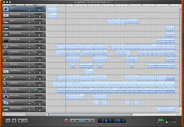

Nine Inch Nails doet het met...
zaterdag 16 april 2005 | Apple
Nine Inch Nails Garageband download! Door Trent Reznor himself. Go play!

zaterdag 16 april 2005 | Apple
Nine Inch Nails Garageband download! Door Trent Reznor himself. Go play!
